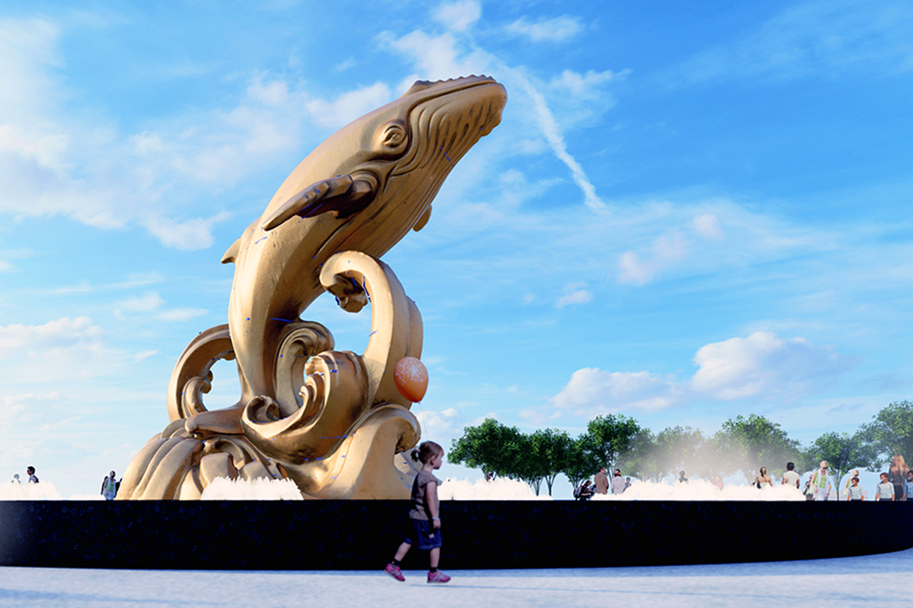
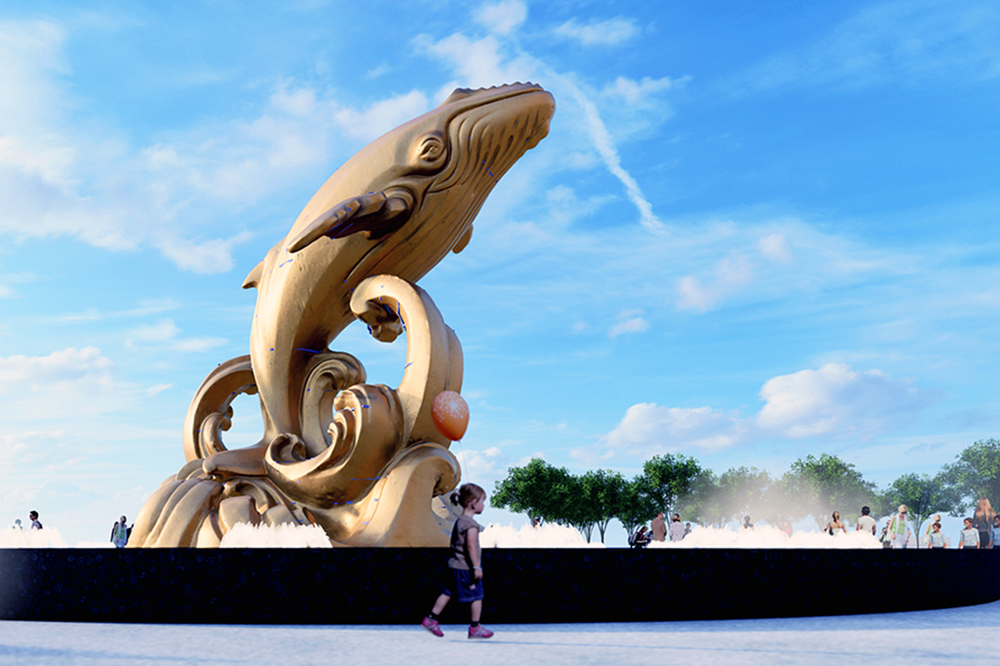

キリスト像
ブンタウの象徴とも言えるキリスト像は、海を見守るように山の上に立つ巨大なモニュメントです。高さ32メートル、両手を広げた姿はまるで町全体を抱きしめているかのよう。370段の階段を登る途中には、青い海と街並みを一望できるビューポイントが点在し、登るたびに違う風景が楽しめます。頂上から見下ろす景色は息をのむほど美しく、朝日や夕日の時間帯には特に感動的です。信仰の象徴であると同時に、ブンタウを訪れた人々の心に深い安らぎを与えてくれる場所です。
ブンタウの象徴とも言えるキリスト像は、海を見守るように山の上に立つ巨大なモニュメントです。高さ32メートル、両手を広げた姿はまるで町全体を抱きしめているかのよう。370段の階段を登る途中には、青い海と街並みを一望できるビューポイントが点在し、登るたびに違う風景が楽しめます。頂上から見下ろす景色は息をのむほど美しく、朝日や夕日の時間帯には特に感動的です。信仰の象徴であると同時に、ブンタウを訪れた人々の心に深い安らぎを与えてくれる場所です。
1862年、フランス統治時代に建てられたブンタウ灯台は、町で最も歴史ある建築物の一つです。白い塔が青い空に映え、どこかヨーロッパの港町を思わせます。丘の上にあるため、登ると美しいパノラマが広がり、海岸線や船の行き交う様子が一望できます。夕暮れ時に灯る灯りは幻想的で、写真愛好家にも人気のスポットです。夜の静けさの中、ゆっくりと光を放つ灯台は、まるで旅人を導く優しい明かりのようです。
町の中心にあるフロントビーチは、地元の人々が散歩やピクニックを楽しむ憩いの場です。日中はカフェや屋台が並び、ローカルフードの香りが漂います。夕方になると、夕陽が海面をオレンジ色に染め、ロマンチックな雰囲気に包まれます。観光客も地元の人も同じようにベンチに座り、海風を感じながら穏やかな時間を過ごします。ブンタウの生活の一部を感じられる、温かみのあるビーチです。
ブンタウ最大のビーチであり、白い砂浜が約10キロにわたって続きます。波が穏やかで海水浴に最適なため、家族連れやカップルに人気です。昼間は太陽の下で泳ぐ人々、夕方は浜辺を散歩する恋人たちの姿が見られます。近くにはリゾートホテルやレストランが多く、1日中過ごせるエリアです。夜にはビーチ沿いのライトが輝き、潮風と音楽に包まれながら、ブンタウの夜を満喫できます。
干潮のときだけ現れる砂の道を渡って行ける神秘的な小島です。島の中心には小さな寺院があり、地元の人々が海の安全と幸せを祈るために訪れます。満潮になると島は再び海に囲まれ、まるで神話の世界に迷い込んだような感覚を味わえます。自然と信仰がひとつになったこの場所は、静けさと神秘さに包まれたブンタウ屈指のパワースポットです。
 
